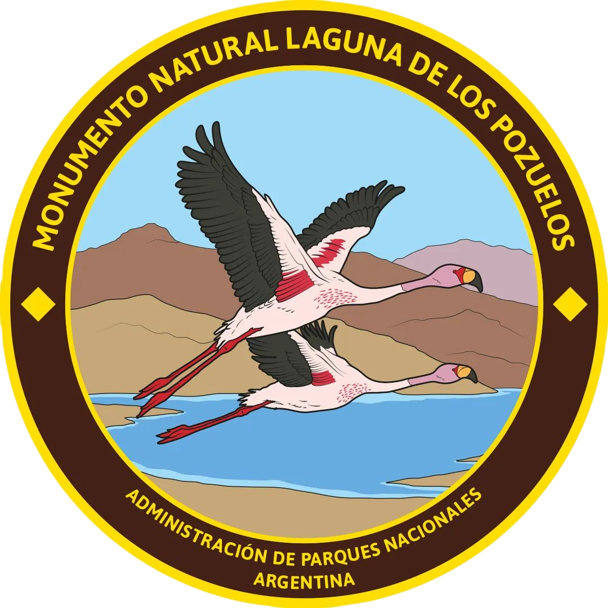

El Monumento Natural Laguna de los Pozuelos se encuentra ubicado en la Puna, al noroeste de
la provincia de
Jujuy a una altura de entre 3.400 a 3.800 m.s.n.m. y tiene una dimensión de 16.224
hectáreas. Comprende las
localidades de Rinconada, Lagunillas, Yoscaba, Cieneguillas y Pozuelos.
Un monumento natural en Argentina es un área, cosa, especies vivas de animales o plantas, de
interés
estético, valor histórico o científico, a los cuales se les acuerda protección absoluta.
- Sitios para visitar y actividades
- Lagunillas, un minúsculo humedal puneño, reúne cientos de aves acuáticas al pie de altos cerros (35 km de la casa del guardaparque).
- Desde Abra Pampa se llega a los pueblos históricos de Cochinoca (23 km, por RP 71) y de Casabindo (60 km, por RP 11), donde se realiza la única corrida de toros en suelo argentino.
- También al onírico escenario de Salinas Grandes (125 km, por RN40 y RP16).